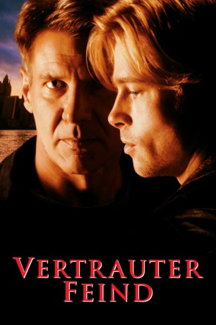

#8702 Vertrauter Feind
Alternativ: The Devil's Own
 
 IMDB-Wertung: 6.1 / 10
IMDB-Wertung: 6.1 / 10  Metascore: 0
Metascore: 0 
Dem jungen IRA-Untergrundkämpfer Frankie McGuire gelingt nach einer blutigen Schießerei mit der britischen Armee die Flucht. Unter falschem Namen reist er in die USA ein, wo ihn ein Mittelsmann bei der Familie des ahnungslosen Cops Tom OMeara unterbringt. Der tut sein Bestes, um dem jungen Frankie fern der Heimat zu einem neuen Start zu verhelfen. Doch der setzt insgeheim seinen politischen Kampf auf amerikanischem Terrain fort. Sein Auftrag: eine Ladung Stinger-Raketen auf dem schwarzen Waffenmarkt für die IRA zu kaufen. Beim Versuch, das Geld für den Big Deal zu besorgen, zieht Frankie den Polizisten und seine Familie unweigerlich in einen mörderischen Guerilla-Krieg hinein, der auf beiden Seiten blutige Opfer fordert...
Jahr: 1997
Dauer: 111 Minuten
FSK: 12
Land: USA Studio: Columbia PicturesTonspuren: DD5.1 - ,
Untertitel:
Auflösung: 1080p (1920x800) Größe: 9820 MB
Genre: Action, Thriller, Drama, Krimi
Regisseur: Alan J. Pakula
Drehbuch: Kevin Jarre
Soundtrack: James Horner
Darsteller:
 Harrison Ford als Tom O'Meara
Harrison Ford als Tom O'Meara Brad Pitt als Rory Devaney / Francis Austin McGuire
Brad Pitt als Rory Devaney / Francis Austin McGuire Margaret Colin als Sheila O'Meara
Margaret Colin als Sheila O'Meara Rubén Blades als Edwin Diaz
Rubén Blades als Edwin Diaz Treat Williams als Billy Burke
Treat Williams als Billy Burke- George Hearn als Peter Fitzsimmons
 Mitchell Ryan als Chief Jim Kelly
Mitchell Ryan als Chief Jim Kelly Natascha McElhone als Megan Doherty
Natascha McElhone als Megan Doherty- Paul Ronan als Sean Phelan
 Simon Jones als Harry Sloan
Simon Jones als Harry Sloan Julia Stiles als Bridget O'Meara
Julia Stiles als Bridget O'Meara- Ashley Carin als Morgan O'Meara
 David O'Hara als Martin MacDuff
David O'Hara als Martin MacDuff David Wilmot als Dessie
David Wilmot als Dessie Anthony Brophy als Gerard
Anthony Brophy als Gerard Hassan Johnson als Teenager
Hassan Johnson als Teenager- Scott Nicholson als Rookie Cop
- Mya Michaels als Hispanic Woman
 Brendan Kelly als Teddy
Brendan Kelly als Teddy- Kevin Nagle als Thug
 Malachy McCourt als Bishop
Malachy McCourt als Bishop- Marian Tomas Griffin als Cousin Eileen
- Rob McElhenney als Kevin
- Debbon Ayer als Tour Guide
- Mario Polit als Young Dominican
 Chance Kelly als Masked Burglar
Chance Kelly als Masked Burglar Bill Hoag als Trucker
Bill Hoag als Trucker Victor Slezak als Evan Stanley - FBI
Victor Slezak als Evan Stanley - FBI Damien Leake als Art Fisher - FBI
Damien Leake als Art Fisher - FBI- Wilson Cleveland als Rory's friend (uncredited)
- Ricardo Cordero als Police Sergeant Aims (uncredited)
- Joseph Tudisco als Cop #1 (uncredited)
- Kelly Singer als Annie O'Meara
- Shane Dunne als Young Frankie
- Martin Dunne als Frankie's Father
- Gabrielle Reidy als Frankie's Mother
- Samantha Conroy als Frankie's Sister
- Baxter Harris als Customs Agent
- Jonathan Earl Peck als Jerry
- Sixto Ramos als Hispanic Man
- Jessica Marie Kavanagh als Hispanic Girl
- Gregory Salata als Tony
- Joseph P. Dandry als Joey the Bartender
- Jack McKillop als Jack Fitzsimmons
- Mac Orange als The Maid
- Peggy Shay als Aunt Birdie
- Danielle McGovern als Brooke
- Ciarán O'Reilly als Father Canlon
- Donald J. Meade als Irish Musician
- Patrick Reynolds als Irish Musician
Datei: X:\1997\Vertrauter Feind (1997, FSK12, 1920x800).mkv seit 25.04.2018
Festplatte: HD 1996-2002
 Es gibt insgesamt 83 Filme in der Gruppe '1997'
Es gibt insgesamt 83 Filme in der Gruppe '1997'